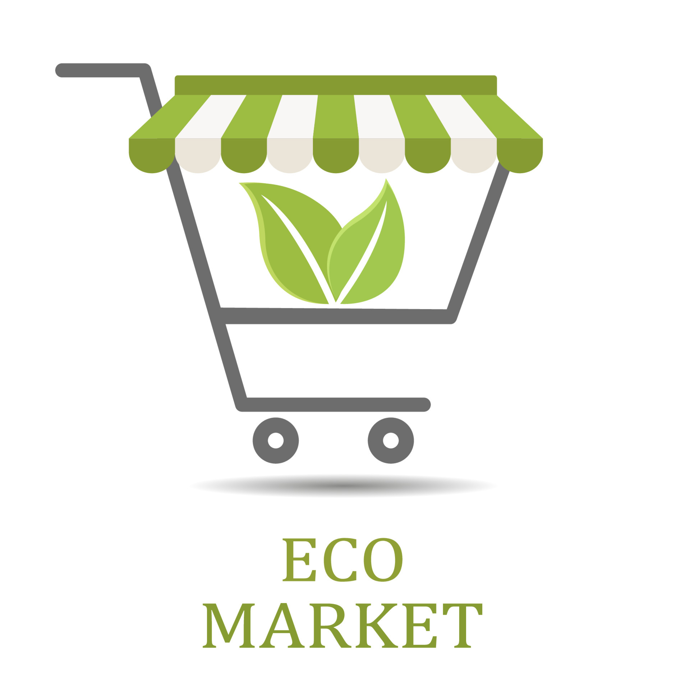
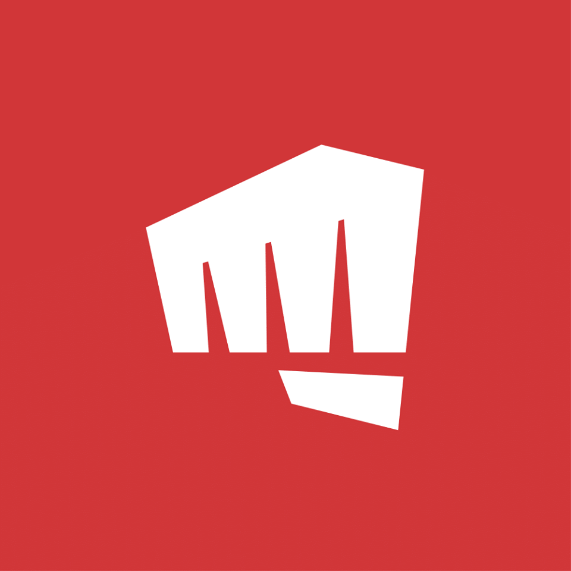
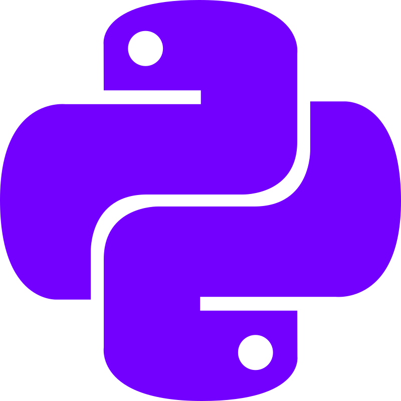
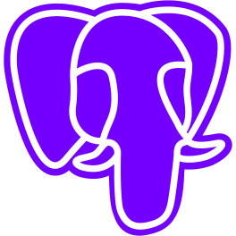
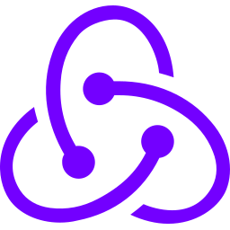
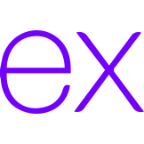

Hola, soy Diego Baldárrago. un apasionado programador con experiencia en desarrollo web y aplicaciones móviles. Me encanta enfrentar desafíos técnicos y encontrar soluciones innovadoras para satisfacer las necesidades de los usuarios. Tengo habilidades en lenguajes de programación como JavaScript, Python y C++, así como en frameworks y tecnologías como React, Node.js y SQL. Estoy constantemente aprendiendo y explorando nuevas tecnologías para mantenerme actualizado en un entorno en constante evolución. Si tienes algún proyecto interesante en mente o necesitas asistencia técnica, ¡estoy aquí para ayudarte!
Ing Sistemas
Universidad de San Marcos
2025 - 2028
Ingeniero de Sistemas con experiencia en diseño, desarrollo e implementación de sistemas informáticos. Experto en análisis de requerimientos, programación y gestión de proyectos. Amplia experiencia en administración de bases de datos y seguridad informática.

EcoMarket - Mercado virtual para productos ecológicos
EcoMarket es una plataforma web diseñada para promover y facilitar la compra y venta de productos ecológicos y sostenibles. La plataforma se centra en ofrecer un espacio virtual donde los consumidores interesados en un estilo de vida más consciente puedan encontrar una amplia variedad de productos respetuosos con el medio ambiente.

Riot Games - Front Developer
2030 - 2035
Proyecto: "Desarrollo y Modelado de Personajes para Video Juego de Riot Games" Proyecto: "Desarrollo y Modelado de Personajes para Juego de Riot Games" Descripción del proyecto: Como trabajador de Riot Games, mi rol principal fue el de programador y modelador 3D enfocado en el desarrollo de personajes para uno de los juegos de la compañía. Este proyecto implicó la creación de personajes con detalles visuales atractivos y funcionalidades únicas que enriquecieron la experiencia de juego.




Direccion : Villa del mar E-1
Numero : +51 954 159 100
correo: dialba11@hotmail.com